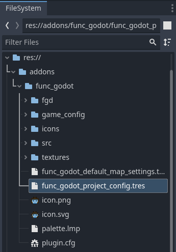
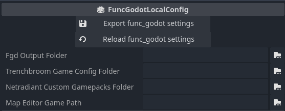

Project Configuration
Directory Structure
Designing a directory structure for your game is its own art, and the layout of your project files can depend greatly on the kind of game you're making. That said, it is generally recommended you create an organization that splits off your TrenchBroom resources from the rest of your Godot assets.
If you're using TrenchBroom, you may already be aware it has a handy backup feature where it creates an autosave folder to periodically save backups of your map file. Less useful is the tendency for Godot to import these backups as well.
However, Godot has its own handy feature to combat this. Any directory with a .gdignore file will not be scanned and imported by Godot. To save yourself some headache later, open the autosave sub-directory in your operating system's file explorer. If using Windows, make sure you have File Name Extensions enabled under the View tab. Create a new text document in the sub-directory and rename it .gdignore, exactly like that with the .txt extension removed.

And just like that, we won't have to deal with Godot constantly importing hundreds of backup map files from our project! You can do this for any directory that you don't want Godot to import files from, such as the folder that contains all of your display models intended to be used only with your map editor.
FuncGodot Local Config
FuncGodot has the option of using a FuncGodotLocalConfig resource to create local project wide settings for your other FuncGodot resources. These settings are applied only to your machine, in order to better facilitate working with a team that may not have the same drive or directory setup or even the same map editor as you yourself use.
You won't create the FuncGodotLocalConfig resource for your project, as this resource doesn't actually save anything to itself directly. Instead you will use the pre-made func_godot_local_config.tres resource found in the addons/func_godot/ folder.

Local Config Properties
Viewing this resource's properties in the inspector, you'll be greeted with some options. We'll ignore the Export Func Godot Settings and Reload Func Godot Settings property for now.

For the FGD Output Folder, you'll want to locate your map editor's game configuration folder or installation folder. Create a sub folder for your game's configuration and set the FGD Output Folder to that sub-folder. This might look something like C:/GameDev/TrenchBroom/Games/MyGame/ or C:/GameDev/J.A.C.K/MyGame/. This tells FuncGodot where to save generated configuration and FGD files when you click on their export button.
The Trenchbroom Game Config Folder is the location of your game's TrenchBroom Game Config folder. This might (but doesn't have to be) the same as your FGD Output Folder. When you export your TrenchBroomGameConfig resource, it will automatically export the FGD file to this folder as well, overriding the FGD Output Folder property.
The Netradiant Custom Gamepack Folder is a little different, in that it should point to your NetRadiant Custom's gamepacks folder (eg: C:/GameDev/NetRadiant Custom/gamepacks/). This will also override the FGD Output Folder when you export your NetRadiantCustomGamepackConfig resource, as NetRadiant Custom splits up gamepack configurations across several folders and files.
The Map Editor Game Path refers to what your Map Editor considers the location of your project. This might look something like C:/GameDev/MyGodotProject/ or C:/GameDev/MyGodotProject/trenchbroom/. The intended use for this is to streamline certain FGD resource paths, like the FuncGodotFGDModelPointClass's model export location.
The Game Path Models Folder is the default folder path relative to your Map Editor Game Path that tells FuncGodot where to save generated model files to. For example, with a Map Editor Game Path value of C:/GameDev/MyGodotProject/trenchbroom/ and a Game Path Models Folder value of models, the generated model file will be saved to C:/GameDev/MyGodotProject/trenchbroom/models/. Currently only used by FuncGodotFGDModelPointClass.
The Default Inverse Scale Factor setting doesn't affect FuncGodotMapSettings resources or how the map builds. It currently only affects scaling display models for FuncGodotFGDModelPointClass definitions in map editors other than TrenchBroom.
Exporting the Local Config
Remember that Export Func Godot Settings property I told you to ignore earlier? Once you have your settings in place, go ahead and click it. It will automatically generate a MyGameFuncGodotConfig.json file in your Godot project's user data folder.
NOTE: You need to run your project at least once before attempting to export settings, so that the user:// folder can be created by Godot! Otherwise you will run into an error and the config file will not export!
This is how we keep local settings local. Upon opening your project, FuncGodot will automatically update func_godot_local_config.tres to load the data from the generated JSON file found in your user data folder, and setting the resource's Export property to true will overwrite that file with the new settings. These settings are not saved to source control, allowing teams to work together more easily and more flexibly.
If you make a change you didn't mean to commit and you haven't yet exported, you can use the Reload option to revert your unwanted changes.